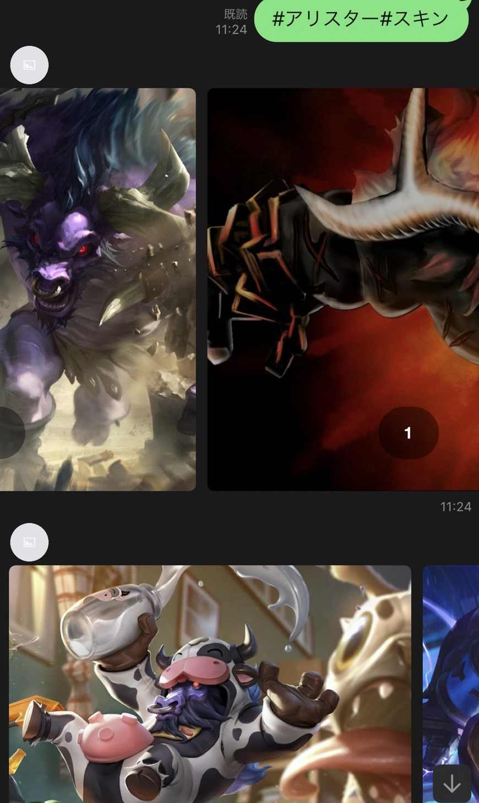
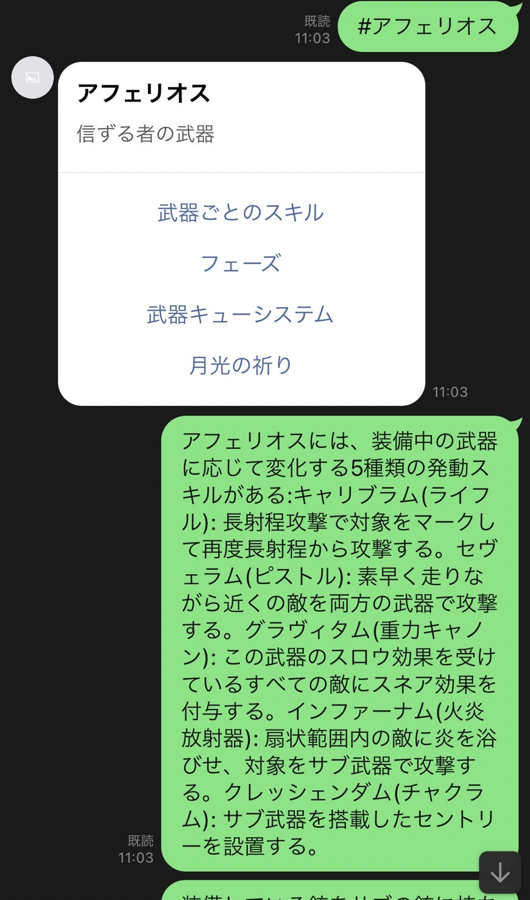
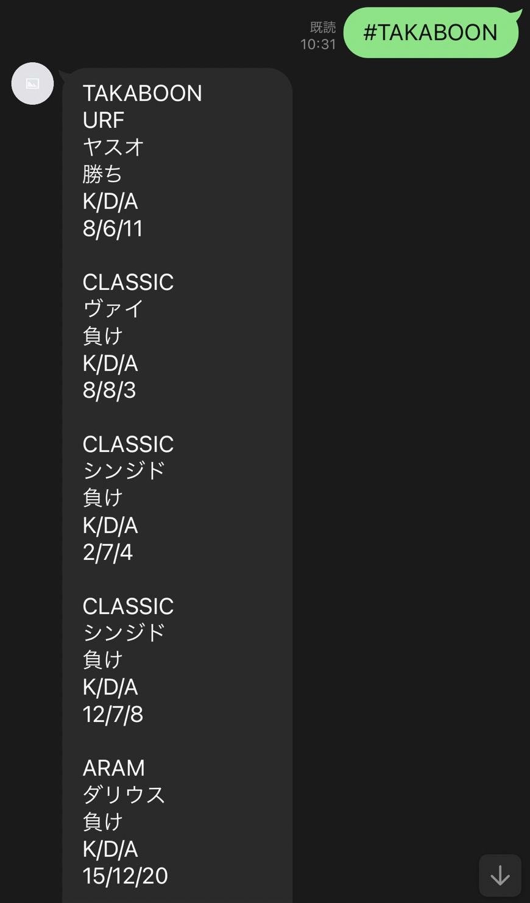

- 
- 
- 
LINEのMessaging APIとLeague of LegendsのAPIを利用してbotの作成
担当
仕様作成・デザイン・コーディング
bot作成の目的
自分の戦歴やチャンピオンのスキン、スキル情報などをグループ内で確認できるbot
ターゲット
自分と友人
デザインについて
自分のアカウント名を送信すると戦歴、チャンピオン名を送信するとチャンピオン情報が返ってくる。
またチャンピオン名の後にスキンもしくはスキルとオプションをつけるとそれらの情報も帰ってくるようになっています。